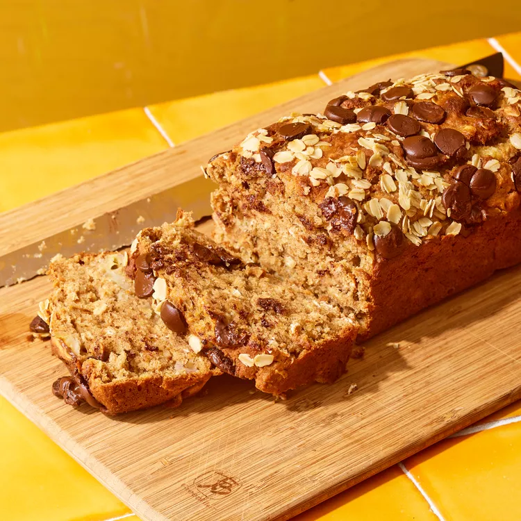

This oatmeal banana bread features old-fashioned oats, which provide texture. This banana bread is subtly sweet and well balanced, making it perfect for tea time, breakfast time and anything in between.

Preheat oven to 350°F. Lightly coat a 9-by-5-inch loaf pan with cooking spray; line with parchment paper, leaving a 2-inch overhang on the long sides of the pan.
Whisk all-purpose flour, whole-wheat flour, baking soda, cinnamon, ginger, salt and 2/3 cup oats together in a medium bowl.
Combine banana, brown sugar, yogurt, oil, vanilla and egg in a large bowl; stir until well mixed.
Add the dry ingredients to the wet ingredients; stir until just combined. Stir in 1/3 cup chocolate chips.
Pour the batter into the prepared pan. Sprinkle with the remaining 1 tablespoon each chocolate chips and oats. Bake until a wooden pick inserted in the center comes out clean, 45 to 50 minutes. Cool completely in the pan on a wire rack, about 35 minutes. Using the parchment overhang, remove the bread from the pan.
Wrap tightly in plastic wrap or foil and store at room temperature for up to 4 days or freeze for up to 3 months.
9-by-5-inch loaf pan; parchment paper